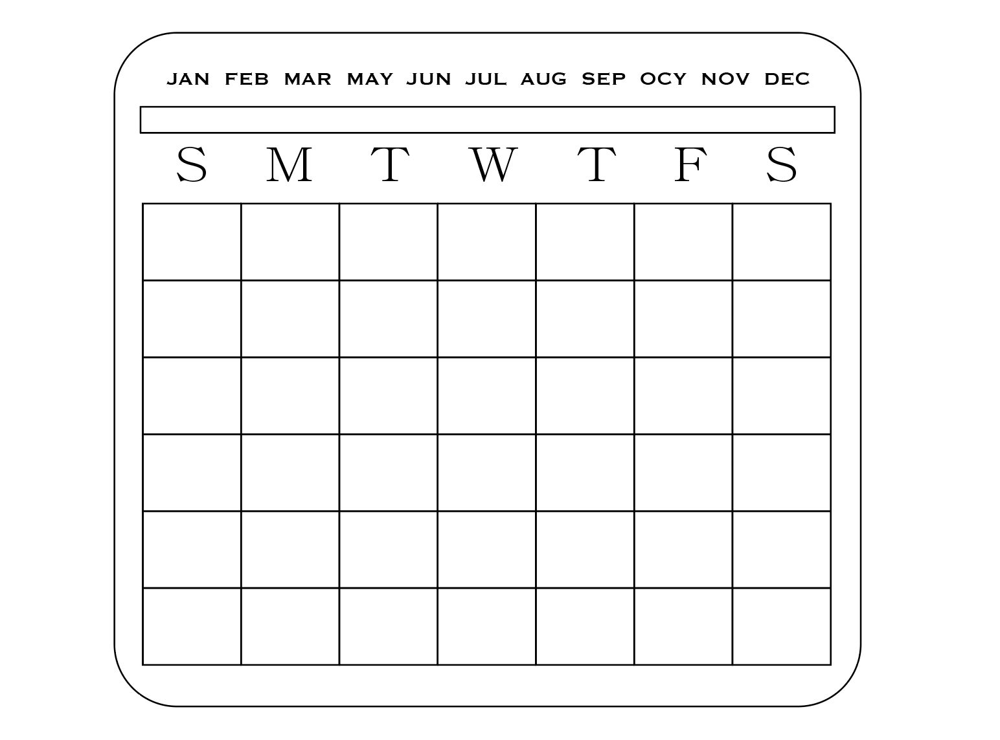

ブランドの立ち上げ
ブランド名
「aqua」水＋ealial「幻想的な美しさ」＋ acrylic アクリル ＝ aQulical
ブランドのターゲット
２０〜３０代前後の女性、サステナブル意識
ブランドコンセント２０〜３０代前後の女性を対象に、シンプルでありながらも華やかさも備えた透明感のある
生活雑貨ブランドとして生活に寄り添ったさせてなブルな商品を提供する
ブランドイメージ
作業中の作品
アクリルカレンダー

説明
アクリルなので、マーカーペンなどでメモしたり消したりできるカレンダー
カレンダーのスタンドは木材でテーブルやベッドに置けるように作る予定